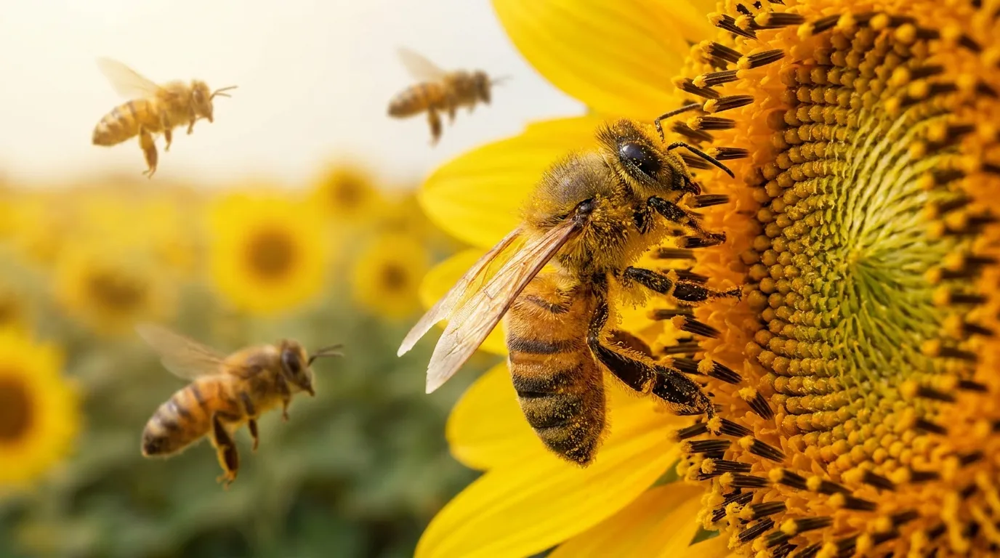

Опыление для будущих семян
Основная культура О.А.З.И.С — подсолнечник — требует перекрёстного опыления насекомыми. В зависимости от площади посева и задач селекционной работы мы используем разные варианты опыления.

О.А.З.И.С · Селекция и семеноводство
Основная культура О.А.З.И.С — подсолнечник — требует перекрёстного опыления насекомыми. В зависимости от площади посева и задач селекционной работы мы используем разные варианты опыления.
Основной опылитель
Пчёлы — основной опылитель на наших полях. Ежегодно мы используем более 10 тыс. пчелосемей на участках гибридизации, а при росте производства их количество будет увеличиваться.
Начиная с 2025 года мы реализуем проект собственной пчелиной фермы, включающей соответствующую инфраструктуру и профессиональный коллектив для выращивания и поддержания не менее 5 тыс. пчелосемей.
Для этих целей выделен участок луга площадью 20 га, строится полностью автоматическая линия по производству мёда и современные омшаники.
Для групповых изоляторов
На участках с групповыми изоляторами площадью от 10 до 500 м² мы используем шмелей для опыления.
В отличие от пчёл, шмели работают в замкнутых помещениях, а также при более низких температурах — от +10 °C, в пасмурную погоду и при сильном ветре.
Минусом является более высокая стоимость опыления и риск укусов персонала, который должен ежедневно посещать участки. В планах компании — начать собственное производство шмелиных семей в высокотехнологичных ульях-боксах.
Экспериментальное направление
Для минимизации рисков укусов персонала пчёлами и шмелями во время цветения мы проводим эксперимент по опылению безжалыми тропическими пчёлами в групповых изоляторах.
В 2027 году первые партии этих экзотических, но очень полезных и интересных насекомых прибудут на нашу станцию. Будем рады поделиться опытом!
Если опыт будет признан состоявшимся, вероятно, эти насекомые займут до 50 % опыления групповых изоляторов.